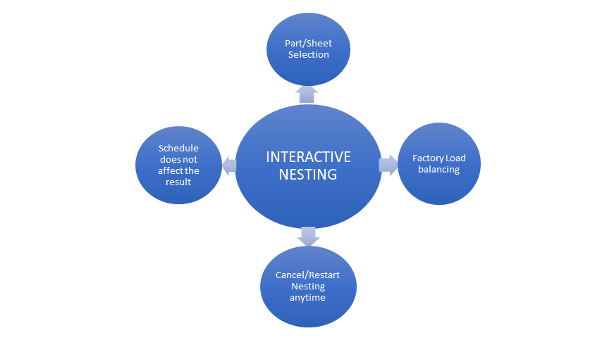
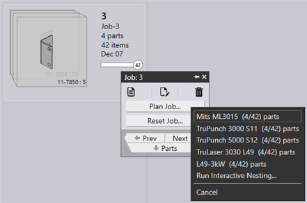
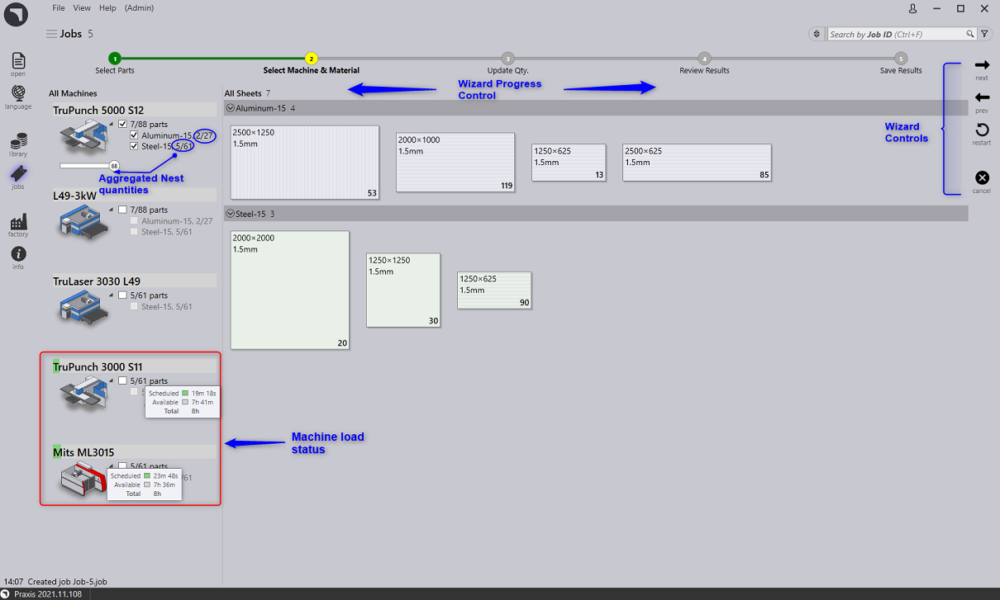
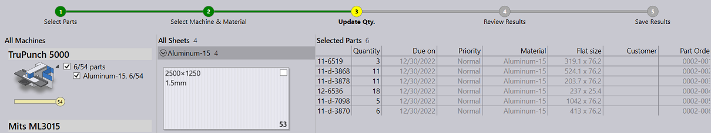
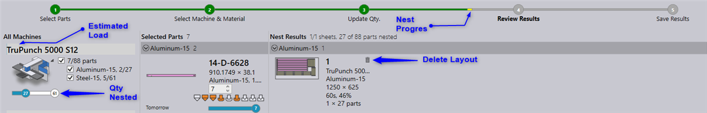
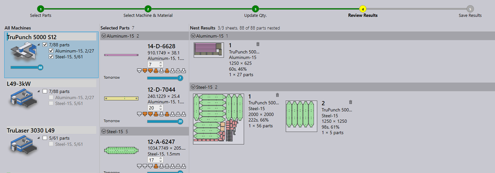
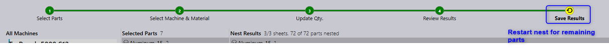
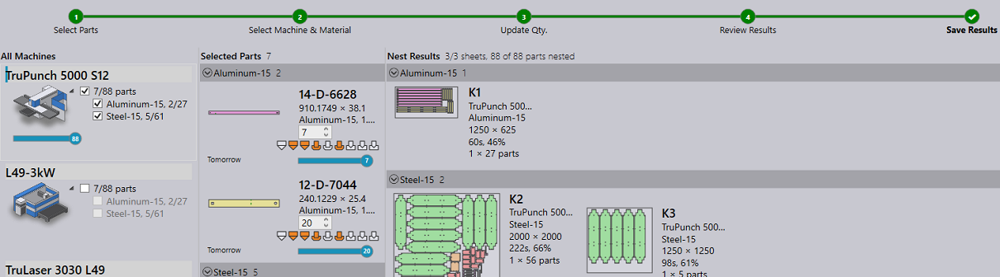

Select one or more parts/jobs to be nested and right click. And select Run Interactive Nesting…
The interactive nesting wizard is loaded in the main work area.

Clicking next moves to the quantities page where the part quantities can be modified.

Moving next begins the nesting and displays the nest progress and results as they are received. The nested quantity and estimated workload are reflected in the Selected Parts, All Machines tabs (in blue color). The nested layouts are drawn to the scale and are displayed in the Nest Results tab.

The nest completes finally, completing the nesting steps. All the nest results can still be cancelled without saving them to the repository.

When all the required parts are not nested, the final step displays a restart symbol, indicating that the nesting process would restart for the remaining parts which were not nested. This may happen for variety of reasons like setting the nest quantity to a lower than required value, infeasible parts on selected machine, discarding some of the nest results etc.

The tick mark (✔) is displayed after the nest completion. Pressing next then, closes and unloads the nest wizard.
